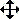

Cross tables
Cross tables can be displayed and printed in various ways. You can select which parts of the cross table to print, preview the cross table, or print it as an ordinary table or as a chart.
Tip
If you are not sure if your report is a cross table, you can check the image between the report list and the report description. For more information about this, see Report types under Show report properties.
Install the CrossTable viewer
To view a cross table report (.Dcube file), you need to install the CrossTable viewer. You only need to do this once per computer.
Do as follows:
- Click
 (main menu) and select Download > Download CrossTable viewer.
(main menu) and select Download > Download CrossTable viewer. - Click the downloaded file (SoCrossTableInstaller.exe) to run it.
- If a security warning is displayed, confirm that you want to run the file. The installation wizard then opens.
- Follow the instructions in the wizard to install the program.
View a cross table
-
Click the Reports button in the Navigator to open the Reports screen.
Select the required cross table report (see Show report properties).
Click the Preview button under the criteria list. The cross table report is generated.
Click the report file (.Dcube) which is displayed in your browser. The file is opened in SuperOffice's cross table viewer application. The cross table report is shown as it will appear when filled with data from the SuperOffice database.
Note
If you cannot see the cross table report in your browser (.Dcube), you need to install the CrossTable viewer.
Edit the contents of the cross table by using the buttons (see below).
Note
Fields, rows and columns which you choose to hide in the step described above will not be included in the print-out.
When you have finished editing the contents of the cross table, you can do one of the following:
- Select File > Print Preview to preview the report.
- Select File > Print to print the report.
- Click Export to save the report in Excel format.
Click OK to close the cross table viewer.
Print cross tables
There are several print options for cross tables. You can select which parts of the cross table to print, preview the cross table, or print it as an ordinary table or as a chart.
Save cross table reports as files
Saving reports as files works slightly differently for cross table reports than for other types of report. To save a cross table report as a file, click Export when viewing the report in the CrossTable viewer.
Buttons
| Icon | Description |
|---|---|
| Click this button to display a list box containing the different options for showing and hiding rows/columns. | |
| Remove the check from this box if you don’t want rows and columns to be displayed in the cross table. | |
| Click the plus sign to choose to display all the rows/columns in the list. | |
| Click the minus sign to choose to hide all the rows/columns in the list. | |
| Click the star to toggle between showing and hiding rows/columns. | |
| Click the tick to confirm your choice. | |
| Click the cross to cancel. | |
| , |
You can also drag and drop individual components of the cross table. The mouse pointer turns into a four-headed arrow when you hold it over a moveable component. Fields where you can move components are displayed with a green line when you hold the mouse pointer over them. |